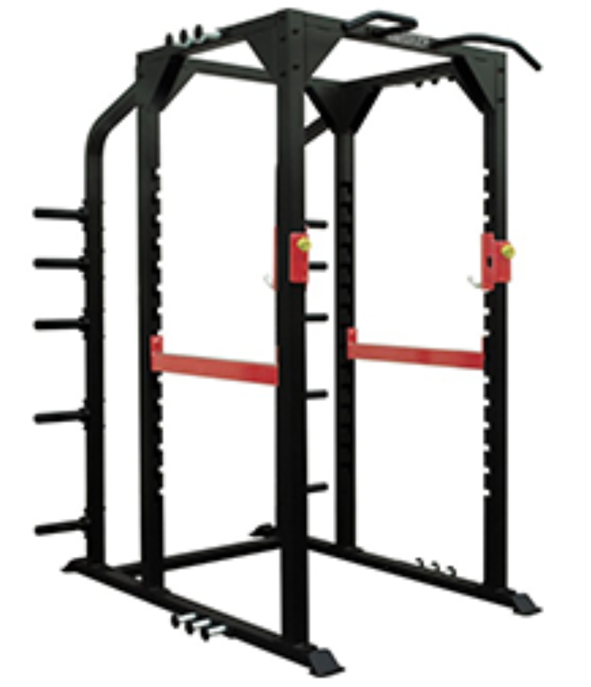
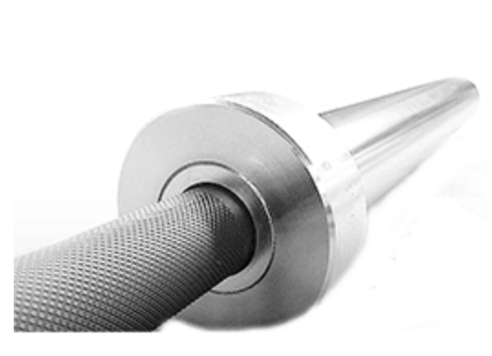
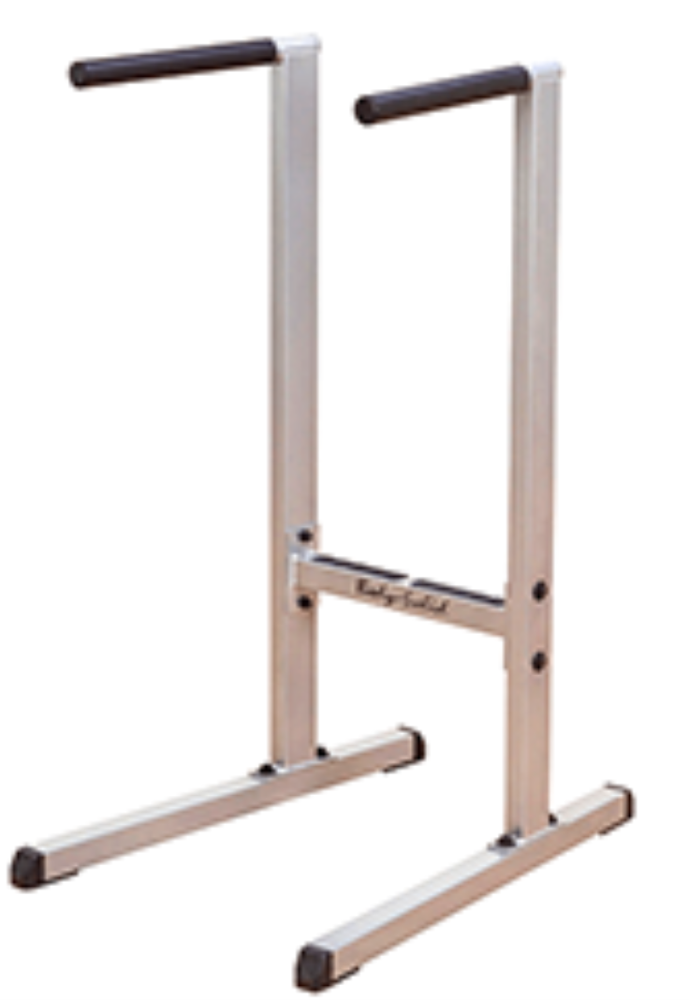
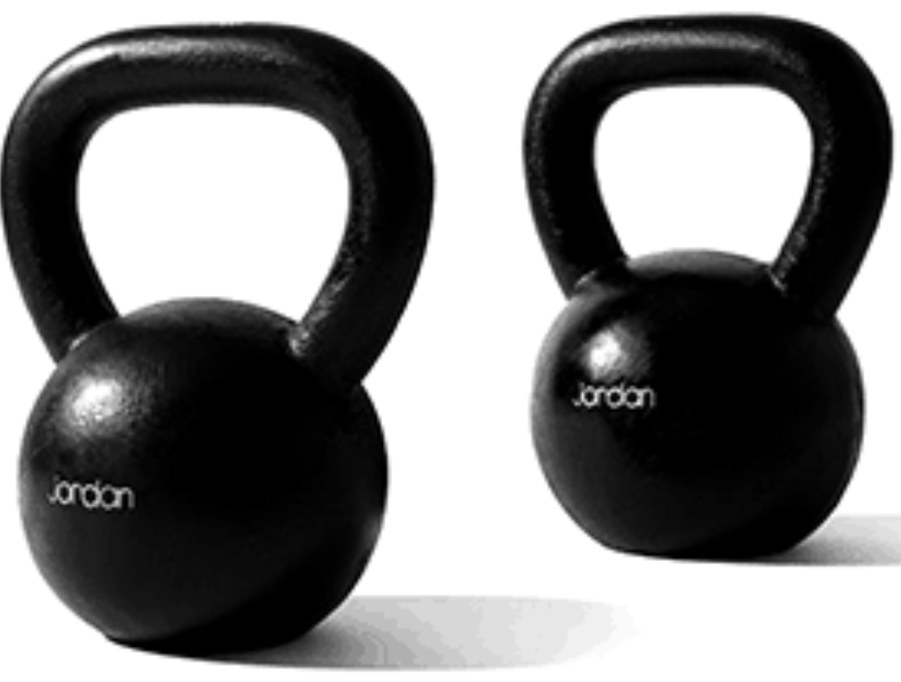

Welcome to FitLife Fitness and Training Center
Other
Commit to be fit!
Squat Rack
Description: Where serious squatting takes place. In fitness and strength training, the squat
exercise trains your fully body. All serious strength training regiments should incorporate the squat
station gym equipment.
Pro Tip: Be sure to squat down until your thighs are pretty much parallel with the floor. Going this low is
essential in doing squats the right way and obtaining a strong core, legs, and back eventually.
Muscles Used: Squatting focuses primarily on thighs, hips and butt, quads, hamstrings; all while
strengthening your bones and ligaments.

Bar bells
Description: A complementary piece to the squat rack.
A barbell is essential to strength training, it holds the freeweights, or sometimes the weights are
attached to the ends.
Pro Tip: A common technique to use when utilizing a barbell is good posture and keeping your
body from swaying; in order to make sure that your body stays stabilized, as when doing exercises on a
gym machine for example.
Muscles Used: Pretty much all muscles are affected when training with barbells,
especially if doing deadlifts.

Dipping Bars
Description: Holding onto the handles, one with each hand, lower your body and lift yourself up.
It’s important to adhere to good form as to avoid any potential shoulder injuries when dabbling with
this gym equipment type.
Pro Tip: You should feel the elongation as you dip and then the contraction as you push back up.
Always perform this exercise slowly, unless you’re an athlete training for sports.
Finally, avoid if you have suffered elbow or shoulder injuries.
Muscles Used: Shoulders, triceps, lower pecs. Dips can be performed with weight, or without,
by keeping your body vertical.

Kettle Bells
Description: Kettle bells have become very popular in the fitness world, there are a ton of
different exercises you can do with kettle bells. Fitness enthusiasts are using them for strength
training and cardio. Take a look at the video for different ways to use kettle bells.
Muscles Used: A lot of different muscle groups. Depends on which exercise you choose to do.
